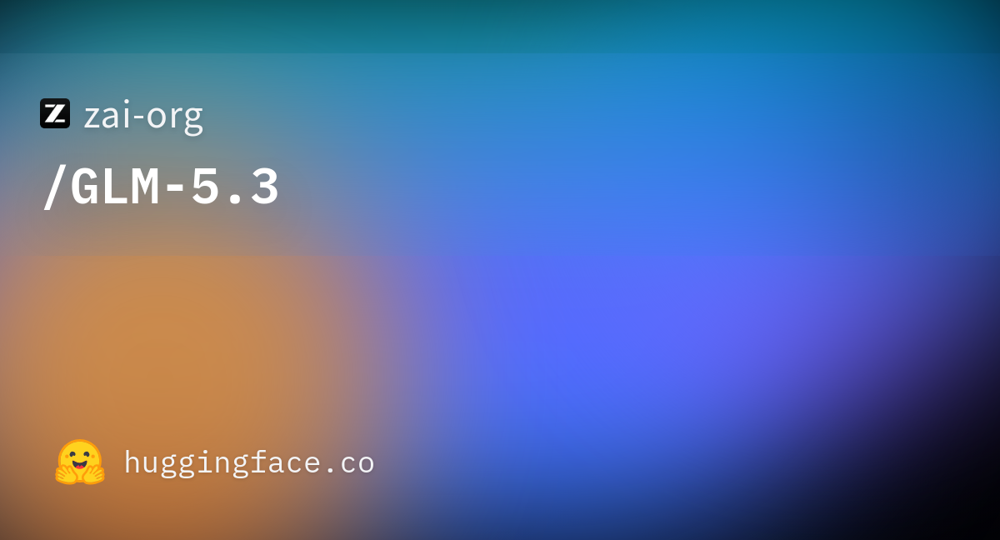

06 Hugging Face · zai-org 게시일 2026.08.28
GLM-5.3, 오픈웨이트로 풀리다

GLM-5.3는 공개 가중치 형태로 배포된 새 모델이다. 공개 페이지는 설명보다 비교표에 무게를 뒀다. 그래서 지금 확인되는 핵심도 도입 조건 전체보다 성능 위치다. 라이선스와 운영 제한은 추가 확인이 필요하다.
핵심 브리핑
GLM-5.3는 오픈웨이트로 공개된 모델이다. 공개 페이지는 코딩, 터미널 작업, 보안, 자동화 중심 벤치마크를 한 표로 제시했다. 비교 대상에는 GLM-5.2, Kimi K3, DeepSeek-V4 Pro-0813, Qwen3.8-Max, Opus 4.8, Fable 5, GPT-5.6 Sol이 들어갔다.
표만 보면 GLM-5.3는 직전 모델인 GLM-5.2보다 거의 모든 항목에서 높다. Terminal Bench 3.0은 4.6에서 28.3으로 올랐다. DeepSWE는 46.2에서 66.9로 높아졌다. CyberGym도 77.2에서 84.5로 상승했다.
다만 모든 비교에서 1위는 아니다. DeepSWE는 Fable 5가 69.7, GPT-5.6 Sol이 72.7이다. NL2Repo는 Opus 4.8이 69.7로 더 높다. ExploitGym은 Fable 5와 GPT-5.6 Sol 수치가 더 크다.
모델 페이지 발췌에는 모델 크기, 하드웨어 요구, 상업 사용 조건이 보이지 않는다. 실제 배포 전에는 별도 모델 카드와 라이선스 문서를 확인해야 한다.
스펙과 도입 조건
공개 발췌만으로는 도입 조건을 다 판단하기 어렵다. 오픈웨이트라는 점은 확인되지만, 실제 기업 도입에 필요한 핵심 정보는 빠져 있다. 라이선스 제한, 상업 사용 가능 범위, 권장 하드웨어, 추론 방식은 제공된 내용만으로 확정할 수 없다.
성능 비교가 이 공개의 중심이라면, 도입 검토는 그 다음 단계다. 특히 금융사처럼 내부망 배포와 접근 통제가 중요한 환경에서는 모델 가중치를 어디서 받고, 어떤 조건으로 재배포·미세조정할 수 있는지부터 문서로 확인해야 한다.
| 벤치마크 | GLM-5.3 | GLM-5.2 | 비교 메모 |
|---|---|---|---|
| Terminal Bench 2.1 | 88.2 | 81.0 | GLM-5.3 우세 |
| Terminal Bench 3.0 | 28.3 | 4.6 | GLM-5.3 큰 폭 상승 |
| DeepSWE (v1.1) | 66.9 | 46.2 | GLM-5.3 우세 |
| NL2Repo | 58.0 | 48.9 | GLM-5.3 우세 |
| ProgramBench (Almost Solved) | 19.0 | 9.5 | GLM-5.3 우세 |
| CyberGym | 84.5 | 77.2 | GLM-5.3 우세 |
| AutomationBench (v1.0.6) | 48.2 | 26.2 | GLM-5.3 우세 |
업계의 움직임
관련 보도는 이번 공개를 단순 성능 경쟁이 아니라 라이선스 전략과 함께 보고 있다. The New Stack은 새 라이선스가 하이퍼스케일러를 겨냥했다는 점을 따로 다뤘다. 공개 가중치 모델이라도 실제 사용 범위는 문구에 따라 크게 달라질 수 있다는 뜻이다.
시사점과 체크포인트
우리 회사가 오픈 모델을 검토할 때는 점수표만 보면 안 된다. 코딩·에이전트 벤치마크 점수는 출발점일 뿐이고, 실제 업무 자동화에서는 권한 통제와 로그 관리가 더 중요하다.
검토 순서는 이렇게 잡는 편이 안전하다.
- 법무팀: 상업 사용, 재배포, 미세조정 허용 범위 확인
- 보안팀: 모델이 코드·명령 실행을 다룰 때 샌드박스가 필요한지 점검
- 인프라팀: 온프레미스 배포 가능 여부와 GPU 요구 확인
- 현업 부서: 벤치마크 과제가 우리 업무와 얼마나 닮았는지 검토
지금 공개 발췌에는 스펙과 라이선스 세부가 충분하지 않다. 실제 도입 판단은 원문 모델 카드와 약관을 본 뒤 내려야 한다.
주요 용어
원문 정보
제목: GLM-5.3 is now open-weight
게시일: 2026.08.28
출처 URL: https://huggingface.co/zai-org/GLM-5.3